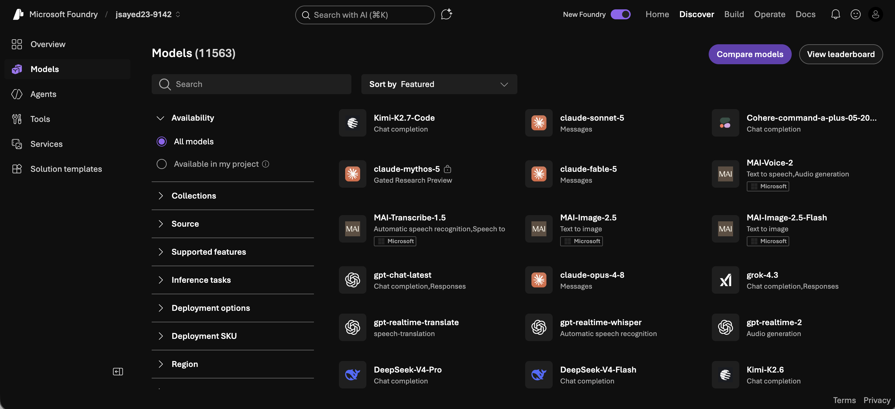
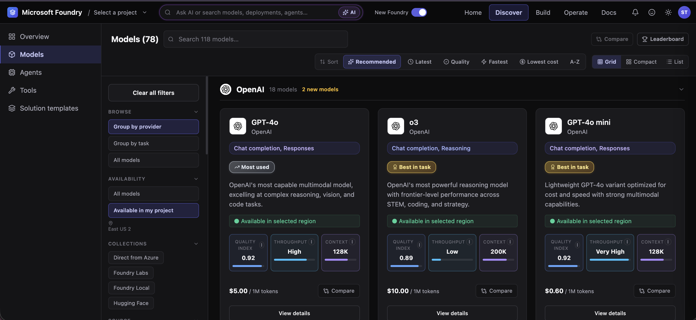
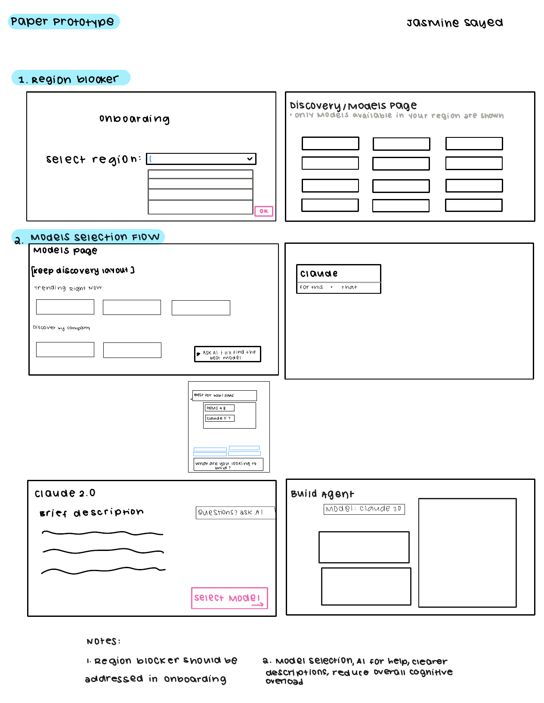
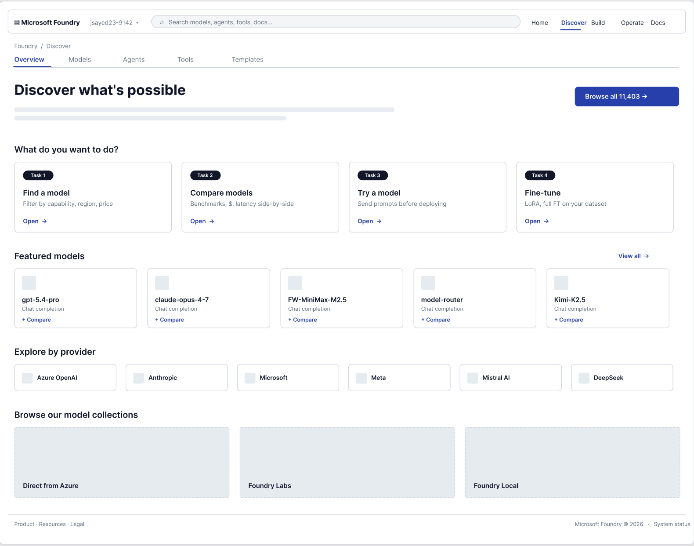
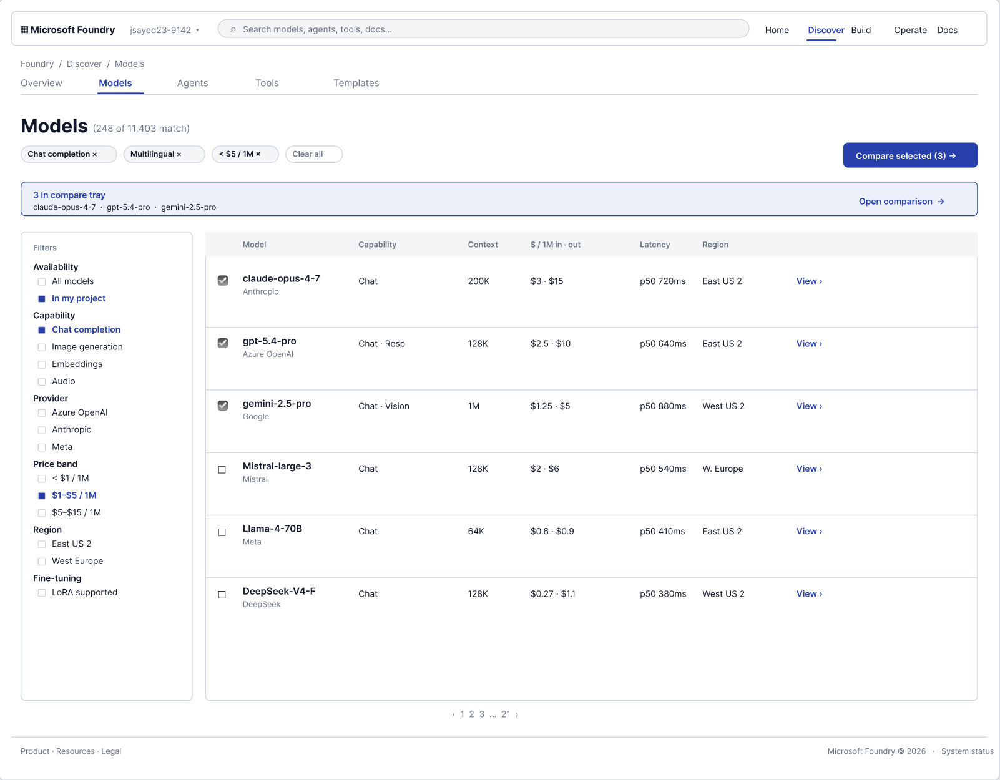
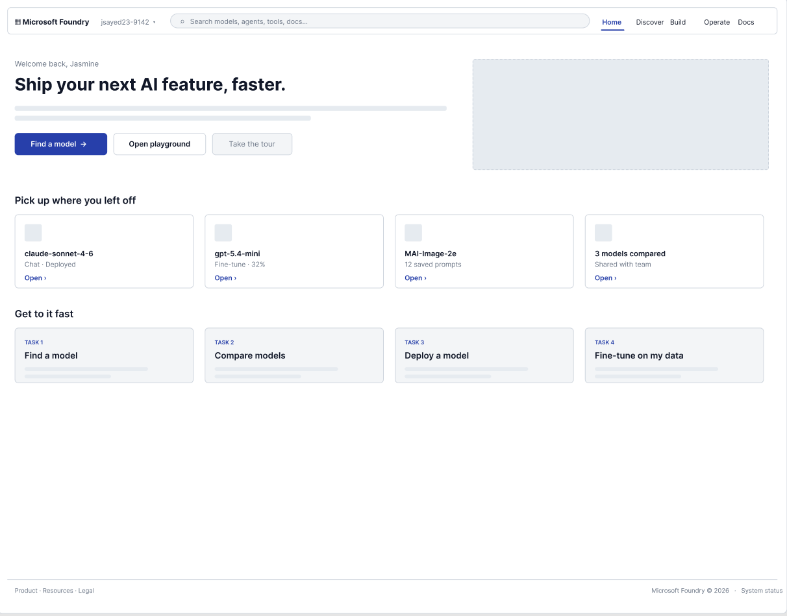

Click anywhere or press Esc to close
Product Design · UX Research · AI Platform
An 11,000-model catalog, turned into a flow developers can actually navigate: region visibility, live filtering, and side-by-side compare. The directions we explored have since been echoed in the live Foundry product. I moved onto this redesign from my own usability research on the platform.
The Problem
Picture a developer who just wants to ship a feature this week. They open Microsoft Foundry, land on the Models page, and are met with more than 11,000 models, each with different capabilities, pricing, context windows, and regional availability. Where do you even begin?
Choosing a model means weighing several of those factors at once, and in the existing experience the details you needed were scattered across the flow. Users kept telling us the same two things: help me narrow this list, and just as often, help me figure out where to even start. Worse, some picked a model only to hit a wall at deployment because it wasn't available in their region.
Our team of five spent three months redesigning the model discovery and selection experience end to end: research, information architecture, a high-fidelity prototype, and two rounds of usability testing. My focus was concept development, information architecture, and stakeholder communication: shaping the core direction of the flow and keeping the work aligned with the Microsoft CoreAI team.
I came to this project from the research side. After running a UX research study on Foundry, I moved from research into design on the same platform.


The starting point (left) lists 11,563 models with little more than a name and a task per tile; every filter hidden in a collapsed accordion, and no pricing or region until you open a model. The redesign (right) surfaces those decisions in the results themselves and turns the filters into a visible, first-class way to narrow the catalog.
Objectives
Early research and stakeholder conversations pointed us at three concrete bets: the levers most likely to reduce friction in how developers find and commit to a model.
Reduction in the time and friction required to select a model · an increase in the number of models explored or tested per session · and fewer user errors or support requests tied to region-configuration issues.
User Research
Because we couldn't access Microsoft's internal data, we ran our own study: a heuristic evaluation of the live platform, moderated developer interviews, and a card sort, to understand how people think about finding and choosing a model.
Initial research and stakeholder discussions led us to three personas. After aligning with Microsoft, Alex, a startup software developer moving fast, became the primary persona we designed for.
“There are so many models… I just want to know which one to start with for my project.”
“I need to weigh cost and capability before I commit the team to a model.”
“I want to move fast without picking a model that creates problems down the road.”
Obstacles
Research told us what to build. A handful of fixed guardrails shaped how far we could take it, and naming them kept the team honest about what "good" could look like inside them.
Sketches & Wireframes
Before touching Figma, we sketched. Paper prototypes let us move fast and argue about structure instead of pixels, and they surfaced the two decisions the whole redesign would hinge on: where the region problem gets solved, and how a developer decides what to even look at first.

Paper prototype. Two flows worth stealing from: a region blocker resolved during onboarding so users only ever see models they can deploy, and a model-selection flow that keeps the Discover layout, adds an “ask AI and it'll find the best model” helper, and leans on clearer descriptions to cut cognitive load.
The sketch notes became our design principles. Three ideas carried all the way from paper into the high-fidelity prototype:
Our sketches floated an AI model-finder: a chatbot that would recommend a model from a plain-language prompt. It was the flashiest idea on the page, and the easiest to over-invest in. With a fixed information architecture and a deliberately narrow scope, a full guided flow risked pulling focus from the moves research said mattered most. We scoped it down to a lightweight AI-assisted search and put our weight behind region, filters, and compare.
Final Prototype
Our paper sketches gave us the wireframes for the flow, and those wireframes became this: a high-fidelity build. Here are its key screens, then see the whole thing live, just below.
Discover: a front door with intent
Instead of an 11,000-row wall, Discover opens with what you're trying to do: find, compare, try, or fine-tune a model.

Models: filter, region, and compare in one place
The core of the redesign: a filter rail narrows 11,000+ models, region and pricing sit right in the results, and a compare tray collects models for a side-by-side decision.

Home: pick up where you left off
Returning developers land on recent models and quick tasks, so a half-finished decision doesn't mean starting the search over.

Live Prototype
The full high-fidelity Foundry redesign, embedded and clickable. Explore Discover, the Models page, filtering, and side-by-side compare, right here.
Interactive Walkthrough
User Testing · Round 2
Our final round of testing put the high-fidelity prototype in front of developers, walking through the Home, Overview, and Models pages plus tasks around agent creation and comparison. We focused on three things that matter to every user:
Directional signals from a small, moderated round, enough to steer the design, not to claim statistical significance.
Results
The redesign reframes model discovery around the decisions developers are actually making (narrowing, evaluating, and committing) instead of scrolling an 11,000-row list and hoping.
Validation
An encouraging signal came after the project: the Microsoft CoreAI team has since added region to the Models filters, one of the directions our research pointed to, and has continued building in that space. Region availability, richer filtering, and side-by-side comparison have all been moving into the live product, echoing the bets we explored in the redesign.
Takeaways